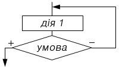
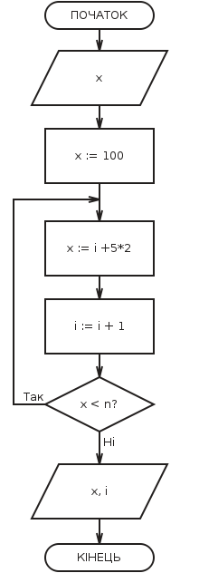

Цикл - керуюча структура, що організовує багаторазове виконання дії.
Цикл "UNTIL":

Виконання циклу починається з виконання дії. Таким чином, тіло циклу буде реалізовано хоча б один раз. Після цього відбувається перевірка умови. Тому цикл "UNTIL" називають циклом з наступною перевіркою умови. Якщо умова не виконується, то відбувається повернення до виконання дій. Якщо умова істинна, то здійснюється вихід з циклу. Таким чином, умова циклу "ДО" - це умова виходу з циклу. Для запобігання зациклення необхідно передбачити дії, що призводять до істинності умови.
Зациклення - нескінченне повторення дій.
Приклад використання циклу з наступною перевіркою умови (малюнок з додатку):
